如果你想要得到什么并且相信自己可以达成所愿，你就会为之努力。如果你为可达成的愿望努力奋斗，你就会得到你想要的。这一点在所有领域都是真理，特别是烹饪和数学领域。
一个美食挑战
我的儿子弗莱德开始吃素时并不是没有遗憾的。他喜欢吃肉。他离开了那些曾经维系他生命并且令他舒心的食物，不知道自己是否还会再次品尝它们。
这类食物中就有火腿汉堡包。火腿汉堡包很特别，它不做假，它是平淡、朴实的食物，简单的“蛋白质”。再简单点儿但更准确地说是“蛋白质、纤维、水和脂肪，被夹进简单的碳水化合物中”。仅此而已，没有秘密、没有惊喜。你和你的一餐饭之间什么都没有——你拿起它，把它吃掉。
现在，曾经的蔬菜汉堡包依然还在。它们，或者说弗莱德品尝过的那些蔬菜汉堡包并没有火腿汉堡包具备的令人心满意足的因素：辣的、开胃可口、有嚼劲、多肉多汁，口感香醇。因此，这个挑战就是设计出一种令人满意的蔬菜汉堡包。
我立即接受了这个挑战，但这挑战原来如此艰难，我用了很多年才使一切稍有好转[18]。让我们先从一些基本原则开始：
·素食汉堡应该简单，味道亲和。
我对商业产品的不满之处在于它们只是味道的简单堆砌——洋葱、大蒜、塔迈里酱油、橄榄、小茴香，等等。火腿汉堡不是外来食品，蔬菜汉堡应该像火腿汉堡那样让人吃起来舒服满意。所以，它应该让你想到家。
而且，汉堡包应该是温和的。火腿汉堡包像画家的空白画布，吃的人应该用西红柿、芥末、泡菜等给它加味。
·素食汉堡应该大致具有真正火腿汉堡那样的“口感”。
它的口感不该单一刻板。火腿汉堡包就不刻板，它们有肉，口感香醇。当然，一个好的蔬菜汉堡包不能有肉，但是一定要像在吃肉。
·素食汉堡应当相当简单易做。
一个牛肉汉堡从组成到放到烤架上翻烤只需要几秒钟。而一个蔬菜汉堡的制作方法需要花费一个半小时准备。如果这种素食汉堡做起来很难，你也不会经常去做。
·最后，素食汉堡应足以保持结构的完整性，这样它可以在烤架上停留3分钟而不会从栅格中滑落。
我对素食汉堡的关键成分做了设想，自认为是个高招儿，并就此开始实践了。我的想法是用葡萄果仁麦片（POST公司出的一种早餐谷物食品）。葡萄果仁麦片潮湿之后会有点火腿汉堡的感觉，而干燥时又可以冒充烤焦了的汉堡包外层那种咬下去脆脆有声的效果。这么做行么？怎么能做到呢？
正如我所料，开始时很顺利，这促使我行动起来，但之后却经历了一次又一次的失败！只有最初的成功让我没有放弃。
我用了大约3年时间，直到最后，一个食谱出现了。
黄油 问题的核心和解决方法的关键在于脂肪。素食汉堡中必须有脂肪，显然黄油就是我们的选择。一份对火腿汉堡的分析报告对适当含量提出了建议（每个汉堡大约一大汤匙的量）。有些会被耗掉，而有些需要保留。怎么做到呢？
蘑菇 未经加工的蘑菇会吸收脂肪，烹饪后也会保留绝大部分脂肪。我将蘑菇磨碎，但是得有东西能将这些蘑菇碎粒和葡萄果仁麦片聚集在一起。怎么能做到呢？
奶酪 马苏里拉奶酪融化时会变得黏稠，这就是我们需要的胶。加热，然后将它们混合在一起，这样汉堡包就会保持聚合的状态。
“伪”汉堡（四个汉堡包的量）
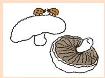
4汤匙黄油
1杯（110克）切碎的马苏里拉奶酪
2个波多贝罗蘑菇，加工成小碎粒
1杯葡萄果仁麦片
1个干净的、空的6盎司装金枪鱼罐头盒
你应当将所有材料配比准备好，按照接下来的指导依次完成：
1.将黄油融化。搅动并加热，直到水分沸腾消失，固体物质变成浅褐色。
2.加入蘑菇，快速混合。
3.随即加入奶酪，搅动直到奶酪融化，立即关火。
4.加入葡萄果仁麦片，搅拌均匀。
现在用金枪鱼罐头塑形。将混合物的四分之一放入罐头盒，均匀压平，将罐头盒倒置在一个平滑的表面上，拍击罐头盒底部。重复此步骤，将剩余的混合物塑形。在烹饪前要将小馅饼冷却。
这里有一个“伪”汉堡和一个火腿汉堡（未烹饪加工）的对比报告（数据来自美国农业部国民营养数据库）：
尽管缺少了蛋白质，还含点淀粉。
但是它还不错。成功了。你可以在炭火上烤，它不会掉到火里。烹饪起来便利快捷。奶酪会赋予它漂亮的焦褐色。
用焦糖洋葱将其覆盖，加盐，加胡椒粉，上面放上新鲜的西红柿和泡菜，再用番茄酱覆盖。
这个混合馅料经得起其他碎肉馅料的考验。你还可以做成丸子和香肠，只是在制作过程中加入其他材料时要留心，观察一下如何烹饪最后的成品。
一个数学上的挑战
一个朋友向我提出一个问题。他曾经因为流感整日卧床，当时他除了昏睡就是盯着墙面看，那上面贴着一种乏味无奇的壁纸。
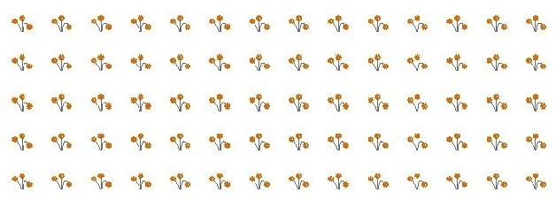
他想象出一条线，从一个角落引出，成对角线移动，然后触边反弹。
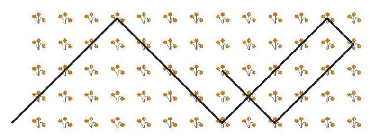
他跟随这条线直到它碰到一个角落。
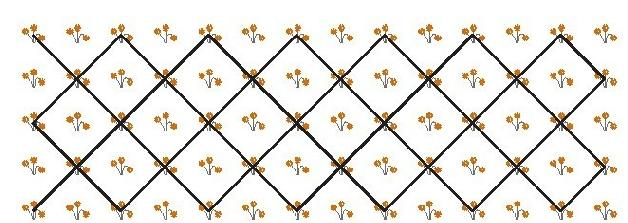
他想如果墙面再小一点，线行走的路径会不同。
他去掉一个纵列后看到——
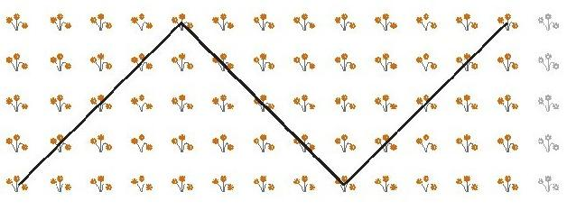
之后又去掉一行和一列。
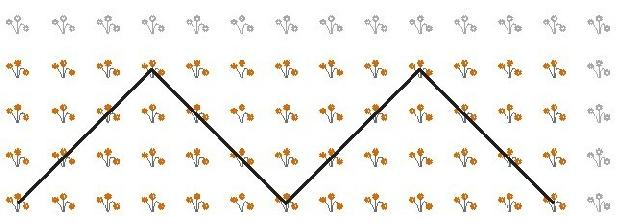
显然，这有些令人费解，他认为我可能会感兴趣。
我的确很感兴趣，并且和他一起用了几天时间解开谜题。这个问题完全与矩形有关。你在一个矩形中四处弹跳，你会一直弹跳下去吗？如果不会，你会碰到哪个角？
我们画了很多矩形。
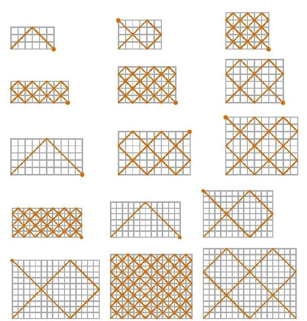
这一定让你感到好奇！
我们最终弄明白了，但是花了我们几天时间。首先，你不会一直弹跳，你最终一定会在某一个角落结束。这就是你为什么一直会穿过交叉点的原因。
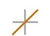
你只能通过同一个交叉点两次
或者一个边点一次
所以，最终你必须停下来，并且停在一个角落上。你不能在起点那一角终止，因为反弹过程中不可能转向相反的方向。
现在看看你会在哪里结束跳跃。假如我们将一半的交叉点用圆点标出，就像在棋盘上一样
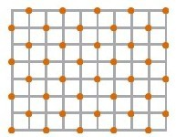
你会看到线路总是会穿过那些被圆点标记的交叉点。
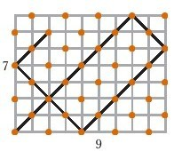
你也会看到，如果长度和宽度是奇数，按照上面所说的情况，你不得不在相对立的那个角终止弹跳——那也是唯一一个带有圆点标记的角！
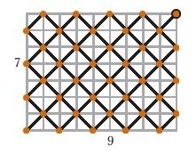
如果矩形的长度和宽度一个是奇数，一个是偶数，
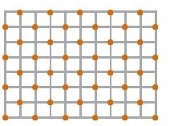
你就不得不在偶数那一边终止，而且那里也是唯一一个带圆点标记的角。
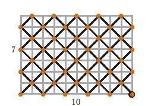
这就给我们留下了唯一一个问题：如果长度和宽度都是偶数的话会怎么样，因为在这种情况下，所有的角都有圆点。
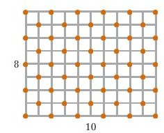
在这种情况下，我们只是将边长除以2。8×10的矩形产生的线路图案与4×5的矩形一样。
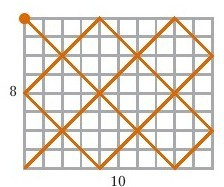
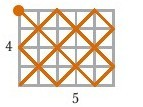
或者如果我这样画就会更清楚了。
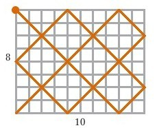
所以，这就是答案，线路总是会终止在“更偶数”的那一边。你一直将边长除以2，直到边长变为奇数。
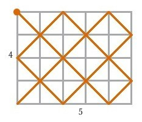
这有一个例子，假设矩形尺寸为44×96
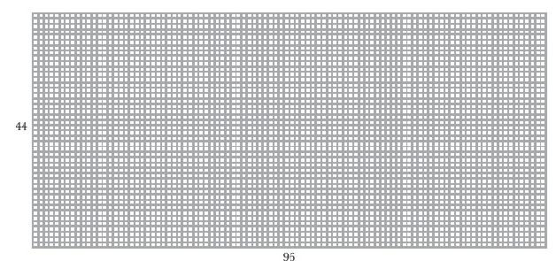
两边的边长都是偶数，因此我们将边长除以2，得到
22×48
还是偶数，所以要继续除以2，得到
11×24
啊哈！96比44更偶数化（我们2次将边长除以2，它仍是偶数）。所以，这条会弹跳的线将会在边长为96的这一边终止。
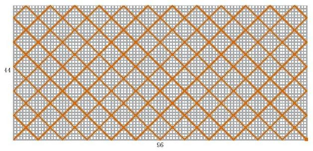
而如果两边是相同的偶数，你会在与对角线上相对立的那个角结束。
关于这个故事还有很多内容。我做过一个梦，是数学的梦——我没有多少数学上的梦，但这是一个。我那时坐在一个巨大的、不知名的矩形多边形的一角。
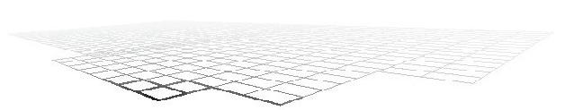
为了一探究竟，我发出一条对角线，想看看它会到哪儿。
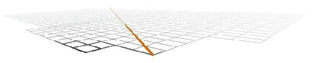
之后，站在我旁边的人说：“多边形的形状决定了对角线的路径图案。那就是令人惊奇的代数学……”
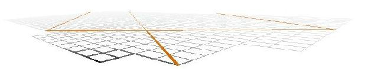
然后我就醒了！
我无法忘掉这个说法。与几何学联系在一起……是什么，这是代数学……什么，它说明了……某些东西。
自那以后几年过去了，我偶然间画了些多边形和对角线，我在寻找……其实，我不知道我在寻找什么。这是我做过的唯一一个（数学上的）梦。我没在其他任何梦里做过工作上的事情！
之后有一天，我有了一个想法。我会在后面的章节里进行说明。